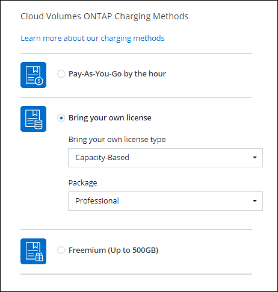

Amazon Web Services
Amazon Web Services
 Google Cloud
Google Cloud
 Microsoft Azure
Microsoft Azure
 Solicitar cambios en el documento
Solicitar cambios en el documento Editar en GitHub
Editar en GitHub Guía del colaborador
Guía del colaboradorLo nuevo
Colaboradores

Descubra las novedades de la gestión de Cloud Volumes ONTAP en BlueXP (anteriormente Cloud Manager).
Las mejoras descritas en esta página son específicas de las funciones de BlueXP que permiten la gestión de Cloud Volumes ONTAP. Para conocer las novedades del propio software Cloud Volumes ONTAP, "Vaya a las notas de la versión de Cloud Volumes ONTAP"
5 de marzo de 2023
Los siguientes cambios se introdujeron con la versión 3.9.27 del conector.
Cloud Volumes ONTAP 9.13.0
BlueXP ahora puede poner en marcha y gestionar Cloud Volumes ONTAP 9.13.0 en AWS, Azure y Google Cloud.
Compatibilidad con 16 TIB y 32 Tib en Azure
Cloud Volumes ONTAP ahora admite tamaños de disco de 16 TIB y 32 TIB para puestas en marcha de alta disponibilidad que se ejecutan en discos gestionados en Azure.
Más información acerca de "Tamaños de disco compatibles en Azure".
Licencia de MTEKM
La licencia de administración de claves de cifrado multi-tenant (MTEKM) ahora se incluye con sistemas Cloud Volumes ONTAP nuevos y existentes que ejecutan la versión 9.12.1 GA o posterior.
La gestión de claves externas multi-tenant permite que las máquinas virtuales de almacenamiento individuales (SVM) mantengan sus propias claves a través de un servidor KMIP al usar el cifrado de volúmenes de NetApp.
Soporte para entornos sin Internet
Cloud Volumes ONTAP ahora es compatible con cualquier entorno de cloud que tenga un aislamiento completo de Internet. En estos entornos solo se admiten las licencias basadas en nodo (BYOL). No se admite la gestión de licencias basadas en capacidad. Para empezar, instale manualmente el software conector, inicie sesión en la consola BlueXP que se ejecuta en el conector, agregue su licencia BYOL a la cartera digital y, a continuación, implemente Cloud Volumes ONTAP.
5 de febrero de 2023
Los siguientes cambios se introdujeron con la versión 3.9.26 del conector.
Creación de grupos de colocación en AWS
Ahora hay disponible una nueva configuración para la creación de grupos de colocación con las implementaciones de zona de disponibilidad única (AZ) de AWS ha. Ahora puede elegir pasar por alto las creaciones de grupos de colocación fallidas y permitir que las puestas en marcha de AWS ha Single AZ se completen correctamente.
Para obtener información detallada sobre cómo configurar la configuración de creación de grupos de colocación, consulte "Configurar la creación de grupos de colocación para AWS ha Single AZ".
Actualización de configuración de zona DNS privada
Ahora hay disponible una nueva configuración para evitar crear un vínculo entre una zona DNS privada y una red virtual cuando se utilizan vínculos privados de Azure. La creación está habilitada de forma predeterminada.
Almacenamiento WORM y organización en niveles de los datos
Ahora puede habilitar la segmentación de datos y el almacenamiento WORM junto al crear un sistema Cloud Volumes ONTAP 9.8 o posterior. Habilitar la organización en niveles de datos con el almacenamiento WORM permite organizar los datos en niveles en un almacén de objetos en el cloud.
1 de enero de 2023
Los siguientes cambios se introdujeron con la versión 3.9.25 del conector.
Paquetes de licencias disponibles en Google Cloud
Los paquetes de licencias optimizados basados en capacidad de Edge Cache están disponibles para Cloud Volumes ONTAP en Google Cloud Marketplace como oferta de pago por uso o como contrato anual.
Consulte "Licencias de Cloud Volumes ONTAP".
Configuración predeterminada de Cloud Volumes ONTAP
La licencia de gestión de claves de cifrado multi-tenant (MTEKM) ya no se incluye en las nuevas implementaciones de Cloud Volumes ONTAP.
Para obtener más información sobre las licencias de funciones de ONTAP instaladas automáticamente con Cloud Volumes ONTAP, consulte "Configuración predeterminada de Cloud Volumes ONTAP".
15 de diciembre de 2022
Cloud Volumes ONTAP 9.12.0
BlueXP ahora puede poner en marcha y gestionar Cloud Volumes ONTAP 9.12.0 en AWS y Google Cloud.
8 de diciembre de 2022
Cloud Volumes ONTAP 9.12.1
BlueXP ahora puede poner en marcha y gestionar Cloud Volumes ONTAP 9.12.1, que incluye compatibilidad con nuevas funciones y regiones adicionales de proveedores de cloud.
4 de diciembre de 2022
Los siguientes cambios se introdujeron con la versión 3.9.24 del conector.
Copia de seguridad DE WORM + cloud ahora disponible durante la creación de Cloud Volumes ONTAP
La posibilidad de activar las funciones DE backup de cloud y escritura única y lectura múltiple (WORM) ya está disponible durante el proceso de creación del Cloud Volumes ONTAP.
La región de Israel ahora es compatible con Google Cloud
La región de Israel ahora es compatible con Google Cloud para Cloud Volumes ONTAP y con el conector para Cloud Volumes ONTAP 9.11.1 P3 y posterior.
15 de noviembre de 2022
Los siguientes cambios se introdujeron con la versión 3.9.23 del conector.
Licencia de ONTAP S3 en GCP
Ahora se incluye una licencia de ONTAP S3 en los sistemas Cloud Volumes ONTAP nuevos y existentes que ejecutan la versión 9.12.1 o posterior en Google Cloud Platform.
6 de noviembre de 2022
Los siguientes cambios se introdujeron con la versión 3.9.23 del conector.
Mover grupos de recursos en Azure
Ahora es posible mover un entorno de trabajo de un grupo de recursos a otro en Azure con la misma suscripción a Azure.
Para obtener más información, consulte "Mover grupos de recursos".
Certificación de compatibilidad con NDMP
NDMP-Copy está ahora certificado para su uso con Cloud Volume ONTAP.
Para obtener información acerca de cómo configurar y utilizar NDMP, consulte "Información general de la configuración de NDMP".
Compatibilidad con el cifrado de disco gestionado para Azure
Se ha agregado un nuevo permiso de Azure que ahora le permite cifrar todos los discos administrados tras su creación.
Para obtener más información sobre esta nueva funcionalidad, consulte "Configure Cloud Volumes ONTAP para utilizar una clave gestionada por el cliente en Azure".
18 de septiembre de 2022
Los siguientes cambios se introdujeron con la versión 3.9.22 del conector.
Mejoras de cartera digital
-
La cartera digital ahora muestra un resumen del paquete de licencias de I/o optimizadas y la capacidad WORM aprovisionada para los sistemas Cloud Volumes ONTAP de toda su cuenta.
Estos detalles pueden ayudarle a comprender mejor la carga y si necesita adquirir capacidad adicional.
-
Ahora puede cambiar de un método de carga al método de carga optimizado.
Optimice los costes y el rendimiento
Ahora puede optimizar el coste y el rendimiento de un sistema Cloud Volumes ONTAP directamente desde el lienzo.
Después de seleccionar un entorno de trabajo, puede elegir la opción optimizar coste y rendimiento para cambiar el tipo de instancia de Cloud Volumes ONTAP. Elegir una instancia de menor tamaño puede ayudarle a reducir costes, mientras que cambiar a una instancia de mayor tamaño puede ayudarle a optimizar el rendimiento.

Notificaciones de AutoSupport
BlueXP generará ahora una notificación si un sistema Cloud Volumes ONTAP no puede enviar mensajes AutoSupport. La notificación incluye un enlace a las instrucciones que puede utilizar para solucionar problemas de red.
31 de julio de 2022
Los siguientes cambios se introdujeron con la versión 3.9.21 del conector.
Licencia de MTEKM
La licencia de administración de claves de cifrado multi-tenant (MTEKM) ahora se incluye con sistemas Cloud Volumes ONTAP nuevos y existentes que ejecutan la versión 9.11.1 o posterior.
La gestión de claves externas multi-tenant permite que las máquinas virtuales de almacenamiento individuales (SVM) mantengan sus propias claves a través de un servidor KMIP al usar el cifrado de volúmenes de NetApp.
Servidor proxy
BlueXP configura automáticamente sus sistemas Cloud Volumes ONTAP para que utilicen el conector como servidor proxy, si no hay disponible una conexión saliente a Internet para enviar mensajes AutoSupport.
AutoSupport supervisa de manera proactiva el estado del sistema y envía mensajes al soporte técnico de NetApp.
El único requisito es asegurarse de que el grupo de seguridad del conector permita conexiones entrante a través del puerto 3128. Tendrá que abrir este puerto después de desplegar el conector.
Cambiar el método de carga
Ahora puede cambiar el método de carga de un sistema Cloud Volumes ONTAP que usa licencias basadas en capacidad. Por ejemplo, si implementó un sistema Cloud Volumes ONTAP con el paquete Essentials, puede cambiarlo por el paquete profesional si se necesita cambiar su empresa. Esta función está disponible en la cartera digital.
Mejora de grupos de seguridad
Al crear un entorno de trabajo Cloud Volumes ONTAP, la interfaz de usuario ahora le permite elegir si desea que el grupo de seguridad predefinido permita únicamente el tráfico dentro de la red seleccionada (recomendado) o de todas las redes.

18 de julio de 2022
Nuevos paquetes de licencias en Azure
Hay dos nuevos paquetes de licencia basados en la capacidad disponibles para Cloud Volumes ONTAP en Azure al pagar mediante una suscripción a Azure Marketplace:
-
Optimizado: Pague por la capacidad suministrada y las operaciones de E/S por separado
-
Edge Cache: Licencia para "Caché de Cloud Volumes Edge"
3 de julio de 2022
Los siguientes cambios se introdujeron con la versión 3.9.20 del conector.
Cartera digital
Digital Wallet muestra ahora la capacidad total consumida en su cuenta y la capacidad consumida por paquete de licencias. Esto puede ayudarle a entender cómo se le está cargando y si necesita adquirir capacidad adicional.

Mejora de volúmenes elásticos
BlueXP ahora admite la función Elastic Volumes de Amazon EBS al crear un entorno de trabajo de Cloud Volumes ONTAP desde la interfaz de usuario. La función Elastic Volumes está habilitada de forma predeterminada cuando se utilizan discos gp3 o io1. Es posible elegir la capacidad inicial según las necesidades de almacenamiento y revisarla después de poner en marcha Cloud Volumes ONTAP.
Licencia de ONTAP S3 en AWS
Ahora se incluye una licencia de ONTAP S3 en los sistemas Cloud Volumes ONTAP nuevos y existentes que ejecuten la versión 9.11.0 o posterior en AWS.
Nuevo soporte de región para Azure Cloud
A partir del lanzamiento de la versión 9.10.1, Cloud Volumes ONTAP ahora es compatible con la región Azure West US 3.
Licencia de ONTAP S3 en Azure
Ahora se incluye una licencia de ONTAP S3 en los sistemas Cloud Volumes ONTAP nuevos y existentes que ejecuten la versión 9.9.1 o posterior en Azure.
7 de junio de 2022
Los siguientes cambios se introdujeron con la versión 3.9.19 del conector.
Cloud Volumes ONTAP 9.11.1
BlueXP ahora puede poner en marcha y gestionar Cloud Volumes ONTAP 9.11.1, que incluye compatibilidad con nuevas funciones y regiones adicionales de proveedores de cloud.
Nueva vista avanzada
Si necesita realizar una administración avanzada de Cloud Volumes ONTAP, puede hacerlo mediante el Administrador del sistema de ONTAP, que es una interfaz de administración que se proporciona con un sistema ONTAP. Hemos incluido la interfaz de System Manager directamente dentro de BlueXP para que no tenga que salir de BlueXP para una administración avanzada.
Esta vista avanzada está disponible como vista previa con Cloud Volumes ONTAP 9.10.0 y posterior. Tenemos pensado perfeccionar esta experiencia y añadir mejoras en próximos lanzamientos. Envíenos sus comentarios mediante el chat en el producto.
Compatibilidad con volúmenes Elastic de Amazon EBS
La compatibilidad con la función Elastic Volumes de Amazon EBS con un agregado de Cloud Volumes ONTAP proporciona un mejor rendimiento y capacidad adicional, a la vez que permite que BlueXP aumente automáticamente la capacidad subyacente del disco según sea necesario.
La compatibilidad con volúmenes Elastic está disponible desde los sistemas new Cloud Volumes ONTAP 9.11.0 y con tipos de disco EBS gp3 e io1.
Tenga en cuenta que la compatibilidad con volúmenes de Elastic requiere nuevos permisos de AWS para el conector:
"ec2:DescribeVolumesModifications",
"ec2:ModifyVolume",Asegúrese de proporcionar estos permisos a cada conjunto de credenciales de AWS que haya añadido a BlueXP. "Consulte la última política del conector para AWS".
Compatibilidad para poner en marcha parejas de alta disponibilidad en subredes compartidas AWS
Cloud Volumes ONTAP 9.11.1 incluye compatibilidad para el uso compartido de AWS VPC. Esta versión de Connector permite implementar un par de ha en una subred compartida de AWS al usar la API.
Acceso limitado a la red cuando se utilizan extremos de servicio
BlueXP limita ahora el acceso a la red cuando se utiliza un extremo de servicio vnet para las conexiones entre cuentas de almacenamiento y Cloud Volumes ONTAP. BlueXP utiliza un extremo de servicio si deshabilita las conexiones de Azure Private Link.
Compatibilidad con la creación de máquinas virtuales de almacenamiento en Google Cloud
Con Cloud Volumes ONTAP en Google Cloud ahora es compatible con varias máquinas virtuales de almacenamiento, a partir de la versión 9.11.1.1. A partir de esta versión de Connector, BlueXP le permite crear máquinas virtuales de almacenamiento en parejas de alta disponibilidad de Cloud Volumes ONTAP en Google Cloud mediante la API.
La compatibilidad con la creación de máquinas virtuales de almacenamiento requiere nuevos permisos de Google Cloud para el conector:
- compute.instanceGroups.get
- compute.addresses.getTenga en cuenta que debe utilizar la CLI o System Manager de ONTAP para crear una máquina virtual de almacenamiento en un sistema de un solo nodo.
2 de mayo de 2022
Los siguientes cambios se introdujeron con la versión 3.9.18 del conector.
Cloud Volumes ONTAP 9.11.0
BlueXP ahora puede implementar y administrar Cloud Volumes ONTAP 9.11.0.
Mejora a las actualizaciones de los mediadores
Cuando BlueXP actualiza el mediador para un par ha, ahora valida que una nueva imagen mediador está disponible antes de eliminar el disco de arranque. Este cambio garantiza que el mediador pueda continuar funcionando correctamente si el proceso de actualización no se realiza correctamente.
Se ha eliminado la pestaña K8S
La ficha K8s quedó obsoleta en una anterior y ahora se ha eliminado. Si desea utilizar Kubernetes con Cloud Volumes ONTAP, puede añadir clústeres de Kubernetes gestionados en Canvas como entorno de trabajo para la gestión de datos avanzada.
Contrato anual en Azure
Los paquetes Essentials y profesional ya están disponibles en Azure mediante un contrato anual. Puede ponerse en contacto con su representante de ventas de NetApp para adquirir un contrato anual. El contrato está disponible como oferta privada en Azure Marketplace.
Una vez que NetApp comparta la oferta privada con usted, podrá seleccionar el plan anual al suscribirse desde Azure Marketplace durante la creación del entorno de trabajo.
Recuperación instantánea de Glacier S3
Ahora puede almacenar datos por niveles en la clase de almacenamiento de recuperación instantánea de Amazon S3 Glacier.
Se requieren nuevos permisos de AWS para el conector
Ahora es necesario obtener los siguientes permisos para crear un grupo de colocación extendido de AWS al implementar un par de alta disponibilidad en una única zona de disponibilidad (AZ):
"ec2:DescribePlacementGroups",
"iam:GetRolePolicy",Estos permisos ahora son necesarios para optimizar cómo BlueXP crea el grupo de colocación.
Asegúrese de proporcionar estos permisos a cada conjunto de credenciales de AWS que haya añadido a BlueXP. "Consulte la última política del conector para AWS".
Nueva compatibilidad regional con Google Cloud
Cloud Volumes ONTAP ahora es compatible en las siguientes regiones de Google Cloud a partir de la versión 9.10.1:
-
Delhi (asia-sur-2)
-
Melbourne (australia-southeast2)
-
Milán (europe-west8) - solo un solo nodo
-
Santiago (sur-oeste-1) - solo un nodo
Compatibilidad con el estándar n2-16 en Google Cloud
El tipo de máquina n2-standard-16 ahora es compatible con Cloud Volumes ONTAP en Google Cloud, a partir de la versión 9.10.1.
Mejoras en las políticas de firewall de Google Cloud
-
Al crear un par de alta disponibilidad de Cloud Volumes ONTAP en Google Cloud, BlueXP ahora mostrará todas las políticas de firewall existentes en un VPC.
Anteriormente, BlueXP no mostraba ninguna política en VPC-1, VPC-2 o VPC-3 que no tuviera una etiqueta de destino.
-
Al crear un sistema de un solo nodo Cloud Volumes ONTAP en Google Cloud, ahora puede elegir si desea que la directiva de firewall predefinida permita el tráfico sólo dentro del VPC seleccionado (recomendado) o de todos los VPC.
Mejora a las cuentas de servicios de Google Cloud
Al seleccionar la cuenta de servicio de Google Cloud para utilizarla con Cloud Volumes ONTAP, BlueXP muestra ahora la dirección de correo electrónico asociada a cada cuenta de servicio. La visualización de la dirección de correo electrónico puede facilitar la distinción entre cuentas de servicio que comparten el mismo nombre.

3 de abril de 2022
Se quitó el enlace de System Manager
Hemos eliminado el vínculo de System Manager que anteriormente estaba disponible en un entorno de trabajo de Cloud Volumes ONTAP.
Aún puede conectarse a System Manager introduciendo la dirección IP de administración del clúster en un explorador web que tiene una conexión con el sistema Cloud Volumes ONTAP. "Obtenga más información sobre la conexión con System Manager".
Carga para el almacenamiento WORM
Ahora que la tarifa especial introductoria ha caducado, ahora se le cobrará por el uso del almacenamiento WORM. La carga se realiza por hora, de acuerdo con la capacidad total aprovisionada de los volúmenes WORM. Esto se aplica a sistemas Cloud Volumes ONTAP nuevos y existentes.
27 de febrero de 2022
Los siguientes cambios se introdujeron con la versión 3.9.16 del conector.
Asistente de volumen rediseñado
El asistente de creación de nuevos volúmenes que presentamos recientemente está ahora disponible al crear un volumen en un agregado específico a partir de la opción asignación avanzada.
9 de febrero de 2022
Actualizaciones del mercado
-
El paquete Essentials y el paquete profesional ya están disponibles en todas las plataformas de proveedores de cloud.
Estos métodos de carga por capacidad le permiten pagar por horas o adquirir un contrato anual directamente a su proveedor de cloud. Aún así, sigue teniendo la opción de adquirir una licencia por capacidad directamente a NetApp.
Si ya dispone de una suscripción a una plataforma de Cloud, estará suscrito automáticamente a estas nuevas ofertas. Puede elegir una carga por capacidad al implementar un nuevo entorno de trabajo de Cloud Volumes ONTAP.
Si es un cliente nuevo, BlueXP le solicitará que se suscriba cuando cree un nuevo entorno de trabajo.
-
Las licencias por nodos de todas las plataformas de proveedores de cloud están obsoletas y ya no están disponibles para los nuevos suscriptores. Esto incluye contratos anuales y suscripciones por hora (Explore, Estándar y Premium).
Este método de carga sigue estando disponible para los clientes existentes que tienen una suscripción activa.
6 de febrero de 2022
Licencias sin asignar de Exchange
Si tiene una licencia basada en nodos sin asignar para Cloud Volumes ONTAP que no ha usado, ahora puede cambiar la licencia convirtiéndola en una licencia de Cloud Backup, una licencia de Cloud Data Sense o una licencia de Cloud Tiering.
Esta acción revoca la licencia de Cloud Volumes ONTAP y crea una licencia equivalente en dólares para el servicio con la misma fecha de caducidad.
30 de enero de 2022
Los siguientes cambios se introdujeron con la versión 3.9.15 del conector.
Selección de licencias rediseñada
Se ha rediseñado la pantalla de selección de licencias cuando se crea un nuevo entorno de trabajo de Cloud Volumes ONTAP. Los cambios destacan los métodos de cargos por capacidad que se introdujeron en julio de 2021 y admiten futuras ofertas en las plataformas de proveedores de cloud.
Actualización de cartera digital
Hemos actualizado el cartera Digital mediante la consolidación de licencias Cloud Volumes ONTAP en una sola pestaña.
2 de enero de 2022
Los siguientes cambios se introdujeron con la versión 3.9.14 del conector.
Soporte para tipos de máquinas virtuales de Azure adicionales
Cloud Volumes ONTAP ahora es compatible con los siguientes tipos de máquinas virtuales en Microsoft Azure, a partir de la versión 9.10.1:
-
E4ds_v4
-
E8ds_v4
-
E32ds_v4
-
E48ds_v4
Vaya a la "Notas de la versión de Cloud Volumes ONTAP" para obtener más información sobre las configuraciones admitidas.
Actualización de carga FlexClone
Si utiliza un "licencia basada en capacidad" Para Cloud Volumes ONTAP, ya no tendrá que pagar la capacidad que utilizan los volúmenes FlexClone.
El método de carga aparece ahora
BlueXP muestra ahora el método de carga para cada entorno de trabajo de Cloud Volumes ONTAP en el panel derecho del lienzo.

Elija su nombre de usuario
Al crear un entorno de trabajo de Cloud Volumes ONTAP, ahora tiene la opción de introducir el nombre de usuario preferido, en lugar del nombre de usuario de administrador predeterminado.

Mejoras de creación de volúmenes
Hemos realizado algunas mejoras en la creación de volúmenes:
-
Hemos rediseñado el asistente para crear volúmenes para facilitar su uso.
-
Las etiquetas que agregue a un volumen ahora están asociadas al servicio Plantillas de aplicación, que puede ayudarle a organizar y simplificar la gestión de sus recursos.
-
Ahora puede elegir una política de exportación personalizada para NFS.

28 de noviembre de 2021
Los siguientes cambios se introdujeron con la versión 3.9.13 del conector.
Cloud Volumes ONTAP 9.10.1
BlueXP ahora puede implementar y administrar Cloud Volumes ONTAP 9.10.1.
Suscripciones de Keystone Flex
Ahora puede utilizar las suscripciones de Keystone Flex para pagar por los pares de alta disponibilidad de Cloud Volumes ONTAP.
Una suscripción de Keystone Flex es un servicio basado en suscripción de pago por crecimiento que proporciona una experiencia de cloud híbrido fluida para aquellos que prefieren modelos de consumo de gastos operativos hasta gastos de capital o arrendamiento iniciales.
La suscripción a Keystone Flex es compatible con todas las nuevas versiones de Cloud Volumes ONTAP que puede implementar desde BlueXP.
Nueva compatibilidad de región con AWS
Ahora, Cloud Volumes ONTAP es compatible con la región Asia-Pacífico (Osaka) de AWS (AP-noreste-3).
Reducción de puertos
Los puertos 8023 y 49000 ya no están abiertos en los sistemas Cloud Volumes ONTAP de Azure para sistemas de un solo nodo y parejas de alta disponibilidad.
Este cambio se aplica a los sistemas new Cloud Volumes ONTAP a partir de la versión 3.9.13 del conector.
4 de octubre de 2021
Los siguientes cambios se introdujeron con la versión 3.9.11 del conector.
Cloud Volumes ONTAP 9.10.0
BlueXP ahora puede implementar y administrar Cloud Volumes ONTAP 9.10.0.
2 de septiembre de 2021
Los siguientes cambios se introdujeron con la versión 3.9.10 del conector.
Clave de cifrado gestionada por el cliente en Azure
Los datos se cifran automáticamente en Cloud Volumes ONTAP, en Azure mediante "Cifrado del servicio de almacenamiento de Azure" Con una clave gestionada por Microsoft. Pero ahora puede utilizar su propia clave de cifrado gestionada por el cliente realizando los siguientes pasos:
-
Desde Azure, cree un almacén de claves y, a continuación, genere una clave en ese almacén.
-
Desde BlueXP, utilice la API para crear un entorno de trabajo de Cloud Volumes ONTAP que utilice la clave.
7 de julio de 2021
Los siguientes cambios se introdujeron con la versión 3.9.8 del conector.
Nuevos métodos de carga
Hay nuevos métodos de carga disponibles para Cloud Volumes ONTAP.
-
BYOL basado en la capacidad: Una licencia basada en la capacidad le permite pagar por Cloud Volumes ONTAP por TIB de capacidad. La licencia está asociada con su cuenta de NetApp y le permite crear tantos sistemas de Cloud Volumes ONTAP, siempre que haya suficiente capacidad disponible mediante su licencia. Las licencias basadas en capacidad están disponibles en forma de paquete, bien Essentials o Professional.
-
Oferta de freemium: Freemium le permite utilizar todas las funcionalidades de Cloud Volumes ONTAP de forma gratuita en NetApp (todavía se aplican cargos por proveedor de cloud). Usted está limitado a 500 GIB de capacidad aprovisionada por sistema y no hay ningún contrato de soporte. Puede tener hasta 10 sistemas Freemium.
A continuación se muestra un ejemplo de los métodos de carga entre los que puede elegir:

Almacenamiento WORM disponible para uso general
El almacenamiento DE escritura única y lectura múltiple (WORM) ya no se encuentra en la versión preliminar y ya está disponible para su uso general con Cloud Volumes ONTAP. "Más información acerca del almacenamiento WORM".
Compatibilidad con m5dn.24xLarge en AWS
A partir de la versión 9.9.1, Cloud Volumes ONTAP ahora admite el tipo de instancia m5dn.24xLarge con los siguientes métodos de carga: PAYGO Premium, traiga su propia licencia (BYOL) y Freemium.
Seleccione los grupos de recursos de Azure existentes
Al crear un sistema Cloud Volumes ONTAP en Azure, ahora tiene la opción de seleccionar un grupo de recursos existente para la máquina virtual y sus recursos asociados.

Los siguientes permisos permiten a BlueXP quitar recursos de Cloud Volumes ONTAP de un grupo de recursos, en caso de que se produzca una eliminación o un error de implementación:
"Microsoft.Network/privateEndpoints/delete",
"Microsoft.Compute/availabilitySets/delete",Asegúrese de proporcionar estos permisos a cada conjunto de credenciales de Azure que haya añadido a BlueXP. "Consulte la última política de Connector para Azure".
El acceso público de BLOB está deshabilitado ahora en Azure
Como mejora de la seguridad, BlueXP ahora desactiva acceso público BLOB al crear una cuenta de almacenamiento para Cloud Volumes ONTAP.
Mejora de Azure Private Link
De forma predeterminada, BlueXP habilita ahora una conexión de Azure Private Link en la cuenta de almacenamiento de diagnóstico de arranque para nuevos sistemas Cloud Volumes ONTAP.
Esto significa que las cuentas de all almacenamiento de Cloud Volumes ONTAP ahora usarán un enlace privado.
Equilibre los discos persistentes en Google Cloud
A partir de la versión 9.9.1, Cloud Volumes ONTAP ahora admite discos persistentes equilibrados (pd-balanceado).
Estos SSD equilibran el rendimiento y el coste proporcionando una tasa de IOPS inferior por GIB.
Custom-4-16384 ya no es compatible con Google Cloud
El tipo de máquina personalizado-4-16384 ya no es compatible con los nuevos sistemas Cloud Volumes ONTAP.
Si ya tiene un sistema en funcionamiento en este tipo de máquina, puede seguir utilizándolo, pero le recomendamos cambiar al tipo de máquina n2-standard-4.
30 de mayo de 2021
Los siguientes cambios se introdujeron con la versión 3.9.7 del conector.
Nuevo paquete profesional en AWS
Un nuevo paquete profesional le permite agrupar Cloud Volumes ONTAP y Cloud Backup Service mediante un contrato anual del mercado de AWS. El pago se realiza por TIB. Esta suscripción no le permite realizar una copia de seguridad de los datos en las instalaciones.
Si elige esta opción de pago, puede aprovisionar hasta 2 PIB por sistema Cloud Volumes ONTAP a través de discos EBS y clasificación por niveles para almacenamiento de objetos S3 (un solo nodo o alta disponibilidad).
Vaya a la "AWS Marketplace" para ver los detalles de los precios y vaya al "Notas de la versión de Cloud Volumes ONTAP" para obtener más información sobre esta opción de licencia.
Etiquetas en volúmenes de EBS en AWS
BlueXP ahora agrega etiquetas a los volúmenes de EBS cuando crea un nuevo entorno de trabajo de Cloud Volumes ONTAP. Las etiquetas se crearon previamente después de la implementación de Cloud Volumes ONTAP.
Este cambio puede ayudar si su organización utiliza directivas de control de servicios (CSP) para administrar los permisos.
Período de refrigeración mínimo para la política de organización automática en niveles
Si habilitó la organización en niveles de datos en un volumen mediante la política auto Tiering, ahora puede ajustar el período de refrigeración mínimo mediante la API.
Mejora a políticas de exportación personalizadas
Cuando se crea un nuevo volumen NFS, BlueXP muestra ahora políticas de exportación personalizadas en orden ascendente, facilitando la búsqueda de la política de exportación que se necesita.
Eliminación de snapshots de cloud antiguas
BlueXP ahora elimina las instantáneas antiguas de la nube de los discos raíz y de arranque que se crean cuando se implementa un sistema Cloud Volumes ONTAP y cada vez que se apaga. Solo se conservan las dos copias snapshot más recientes tanto para el volumen raíz como para el de arranque.
Esta mejora ayuda a reducir los costes del proveedor de cloud al eliminar las copias Snapshot que ya no son necesarias.
Tenga en cuenta que un conector requiere un nuevo permiso para eliminar instantáneas de Azure. "Consulte la última política de Connector para Azure".
"Microsoft.Compute/snapshots/delete"24 de mayo de 2021
Cloud Volumes ONTAP 9.9.1
BlueXP puede ahora implementar y administrar Cloud Volumes ONTAP 9.9.1.
11 de abril de 2021
Los siguientes cambios se introdujeron con la versión 3.9.5 del conector.
Informes de espacio lógico
BlueXP permite ahora la generación de informes sobre el espacio lógico en la máquina virtual de almacenamiento inicial que crea para Cloud Volumes ONTAP.
Cuando el espacio se notifica de forma lógica, ONTAP informa el espacio de volumen de modo que todo el espacio físico que ahorran las funciones de eficiencia del almacenamiento también se indica como se utiliza.
Compatibilidad con discos gp3 en AWS
Cloud Volumes ONTAP ahora admite discos SSD de uso general (gp3), a partir de la versión 9.7. Los discos gp3 son los SSD de menor coste que equilibran los costes y el rendimiento para una amplia gama de cargas de trabajo.
Ya no se admiten los discos HDD fríos en AWS
Cloud Volumes ONTAP ya no admite discos HDD en frío (sc1).
Cuentas de almacenamiento de TLS 1.2 para Azure
Cuando BlueXP crea cuentas de almacenamiento en Azure para Cloud Volumes ONTAP, la versión de TLS para la cuenta de almacenamiento se encuentra ahora en la versión 1.2.
8 Mar 2021
Los siguientes cambios se introdujeron con la versión 3.9.4 del conector.
Cloud Volumes ONTAP 9.9.0
BlueXP ahora puede implementar y administrar Cloud Volumes ONTAP 9.9.0.
Compatibilidad con el entorno AWS C2S
Ahora puede implementar Cloud Volumes ONTAP 9.8 en el entorno de servicios de cloud comercial (C2S) de AWS.
Cifrado de AWS con CMKs gestionados por el cliente
BlueXP siempre ha habilitado la encriptación de datos Cloud Volumes ONTAP mediante el Servicio de gestión de claves de AWS (KMS). A partir de Cloud Volumes ONTAP 9.9.0, los datos en discos EBS y los datos organizados en niveles en S3 se cifran si selecciona un CMK gestionado por el cliente. Anteriormente, solo se cifraban los datos de EBS.
Tenga en cuenta que deberá proporcionar acceso a la función IAM de Cloud Volumes ONTAP para poder utilizar el CMK.
Compatibilidad con Azure DoD
Ahora puede implementar Cloud Volumes ONTAP 9.8 en el nivel de impacto 6 (IL6) del Departamento de Defensa de Azure (DoD).
Reducción de direcciones IP en Google Cloud
Hemos reducido el número de direcciones IP necesarias para Cloud Volumes ONTAP 9.8 y versiones posteriores en Google Cloud. De forma predeterminada, se requiere una dirección IP menor (unificamos la LIF de interconexión de clústeres con la LIF de gestión de nodos). También tiene la opción de omitir la creación de la LIF de gestión de SVM al usar la API, lo que reduciría la necesidad de usar una dirección IP adicional.
Compatibilidad con VPC compartido en Google Cloud
Al poner en marcha un par de alta disponibilidad de Cloud Volumes ONTAP en Google Cloud, ahora puede elegir VPC compartidos para VPC-1, VPC-2 y VPC-3. Anteriormente, solo VPC-0 podía ser un VPC compartido. Este cambio es compatible con Cloud Volumes ONTAP 9.8 y versiones posteriores.
4 de enero de 2021
Los siguientes cambios se introdujeron con la versión 3.9.2 del conector.
Publicaciones de AWS
Hace unos meses, anunciamos que Cloud Volumes ONTAP había logrado la designación de fábrica de servicios web de Amazon (AWS). Hoy nos complace anunciar que hemos validado BlueXP y Cloud Volumes ONTAP con entradas externas de AWS.
Si tiene una publicación externa de AWS, puede implementar Cloud Volumes ONTAP en esa publicación seleccionando el VPC de salida en el asistente del entorno de trabajo. La experiencia es la misma que cualquier otro VPC que resida en AWS. Tenga en cuenta que primero deberá implementar un conector en su AWS Outpost.
Hay algunas limitaciones que señalar:
-
Solo se admiten sistemas Cloud Volumes ONTAP de un solo nodo a. esta vez
-
Las instancias de EC2 que se pueden utilizar con Cloud Volumes ONTAP está limitado a lo que hay disponible en su mensaje de salida
-
Actualmente, solo se admiten las unidades SSD de uso general (gp2)
Ultra SSD VNVRAM en regiones de Azure compatibles
Cloud Volumes ONTAP ahora puede utilizar un Ultra SSD así VNVRAM cuando se utiliza el tipo de máquina virtual E32S_v3 con un sistema de un solo nodo "En cualquier región de Azure compatible".
VNVRAM proporciona un mejor rendimiento de escritura.
Elija una zona de disponibilidad en Azure
Ahora puede elegir la zona de disponibilidad en la que desea poner en marcha un sistema Cloud Volumes ONTAP de un único nodo. Si no selecciona un AZ, BlueXP seleccionará uno para usted.

Discos de mayor tamaño en Google Cloud
Cloud Volumes ONTAP ahora admite discos de 64 TB en GCP.

|
La capacidad máxima del sistema con discos por sí misma permanece en 256 TB debido al límite de GCP. |
Nuevos tipos de máquinas en Google Cloud
Cloud Volumes ONTAP ahora admite los siguientes tipos de máquinas:
-
n2-Standard-4 con la licencia de Explore y con BYOL
-
n2-Standard-8 con licencia estándar y con BYOL
-
n2-Standard-32 con licencia Premium y con BYOL
3 de noviembre de 2020
Los siguientes cambios se introdujeron con la versión 3.9.0 del conector.
Enlace privado de Azure para Cloud Volumes ONTAP
De forma predeterminada, BlueXP permite ahora una conexión de Azure Private Link entre Cloud Volumes ONTAP y sus cuentas de almacenamiento asociadas. Un vínculo privado protege las conexiones entre los extremos en Azure.